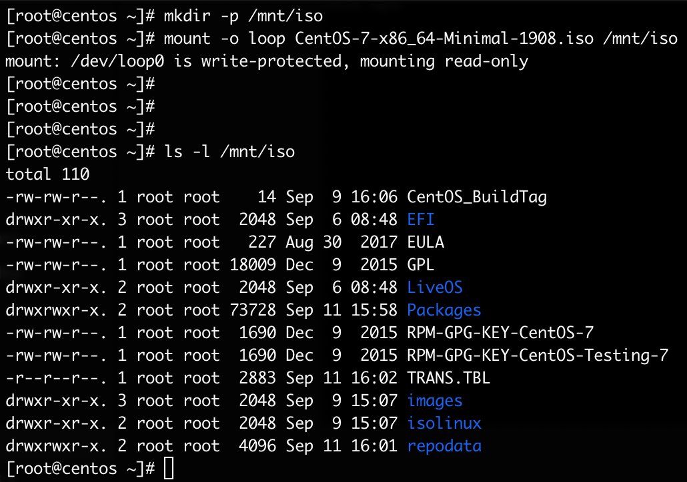
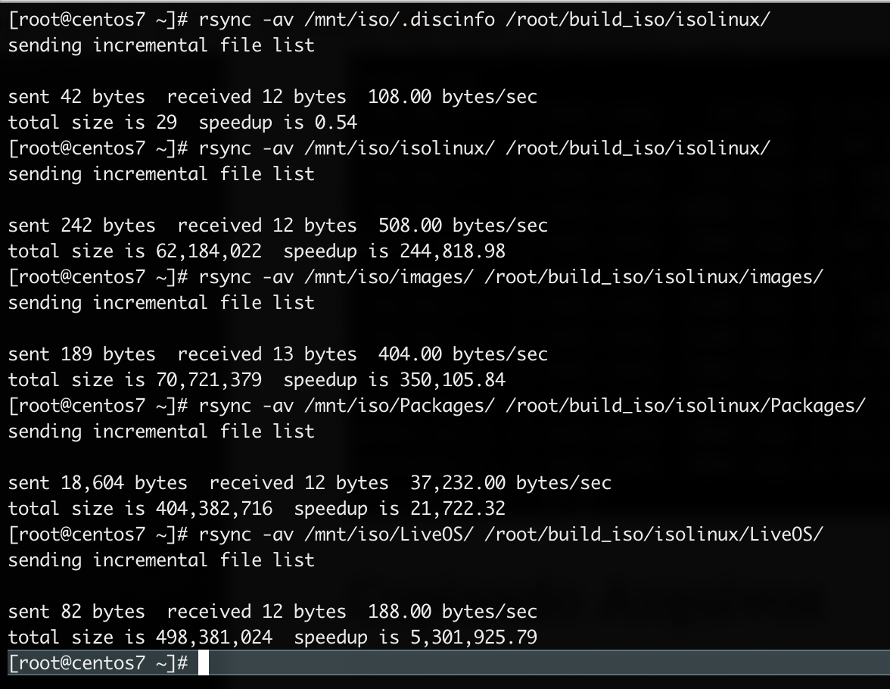
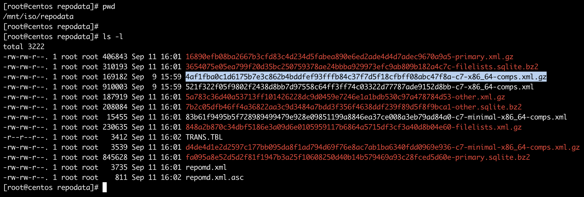
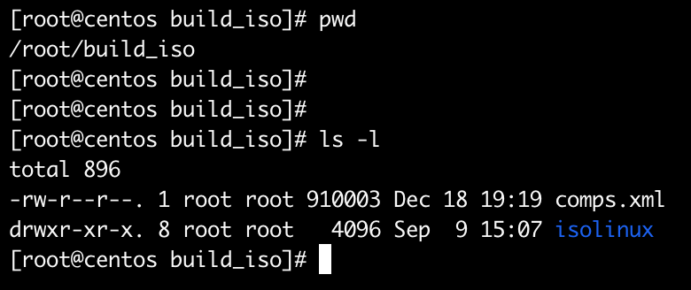
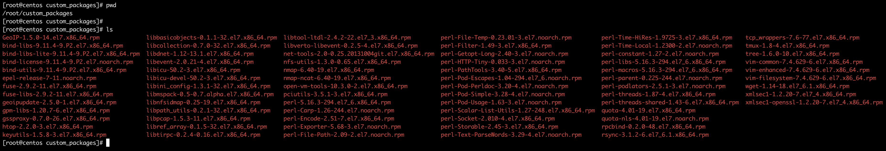
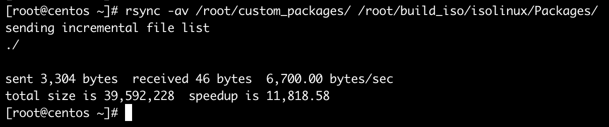
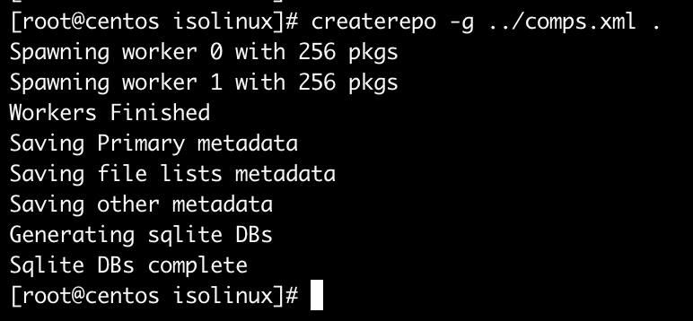
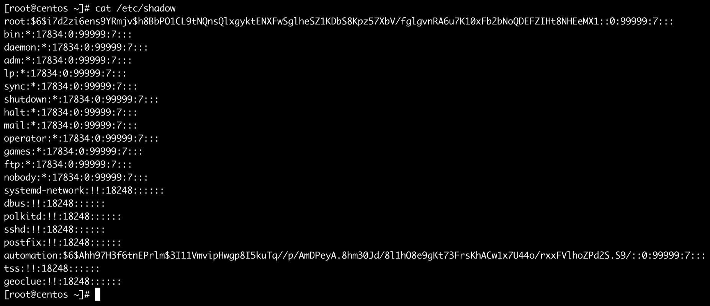
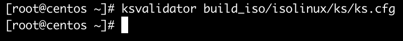
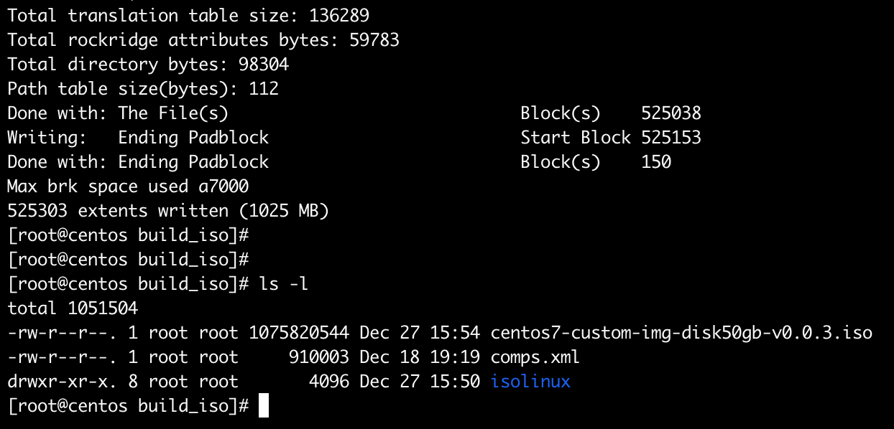

Automatizando a instalação do CentOS com Kickstart
No meu primeiro artigo demonstro como automatizar a criação de máquinas virtuais no VMware com terraform e no processo utilizo uma ISO CentOS automatizada com kickstart.
Mesmo automatizando a criação da máquina virtual ainda ficamos presos ao processo de instalação do sistema operacional, então, precisamos criar um processo parcial ou totalmente automatizado para ganharmos a agilidade no processo de entrega.
Fazar a entrega totalmente automatizada do processo de criação da máquina virtual e instalação do sistema operacional.
Requisitos
OBS: Para esse exemplo vou utilizar a imagem do CentOS 7.
- Uma máquina virtual com o CentOS já instalado.
- ISO: CentOS 7
Pacotes
Já no host/vm vamos instalar os pacotes necessários para criar a ISO.
yum install -y rsync createrepo genisoimage system-config-kickstart
Diretórios
Precisamos criar uma estrutura de diretórios para colocar os arquivos da ISO.
mkdir -p build_iso/isolinux/{images,ks,LiveOS,Packages,postinstall}
- isolinux: diretório central com o conteúdo da iso.
- images: diretório com a imagem efiboot.img para inicializar a iso.
- ks: diretório do arquivo ks.cfg, arquivo que iremos customizar para automatizar a instalação.
- LiveOS: diretório com a imagem squashfs.img para filesystem temporário da iso.
- Packages: diretório com os pacotes que serão instalados durante o processo de deploy do SO e também os pacotes adicionais.
- postinstall: diretório para incluir tudo que você precisa que seja feito depois da instalação do SO.
ISO CentOS
Download da image iso do CentOS.
wget http://ftp.unicamp.br/pub/centos/7.7.1908/isos/x86_64/CentOS-7-x86_64-Minimal-1908.iso
Precisamos montar a ISO para termos acesso aos arquivos.
mkdir -p /mnt/iso
mount -o loop CentOS-7-x86_64-Minimal-1908.iso /mnt/iso
">
Copiando Arquivos
Preciamos copiar os arquivos para criar a iso corretamente.
rsync -av /mnt/iso/.discinfo /root/build_iso/isolinux/
rsync -av /mnt/iso/isolinux/ /root/build_iso/isolinux/
rsync -av /mnt/iso/images/ /root/build_iso/isolinux/images/
rsync -av /mnt/iso/Packages/ /root/build_iso/isolinux/Packages/
rsync -av /mnt/iso/LiveOS/ /root/build_iso/isolinux/LiveOS/
">
Para o processo de instalação identificar quais os pacotes serão instalados, precisamos copiar o arquivo comps.xml. Esse arquivo está compactado dentro do diretório /mnt/isolinux/repodata.
">
cp /mnt/iso/repodata/4af1fba0c1d6175b7e3c862b4bddfef93fffb84c37f7d5f18cfbff08abc47f8a-c7-x86_64-comps.xml.gz /root/build_iso/comps.xml.gz
cd /root/build_iso/
gunzip comps.xml.gz
">
Pacotes Adicionais
Seguindo a idéia de automação, podemos adicionar pacotes na ISO para que sejam instalados durante o processo de instalação do SO. Para isso vamos fazer criar um diretório e fazer o download dos pacotes necessários. Para esse exemplo vamos usar os seguintes pacotes.
- epel-release
- net-tools
- bind-utils
- nfs-utils
- yum-utils
- libxml2-python
- nc
- nmap
- wget
- rsync
- curl
- tree
- tmux
- htop
- vim
- open-vm-tools
- Esse pacote é necessário se você estiver usando o VMware como virtualizador padrão.
mkdir -p /root/custom_packages
cd /root/custom_packages
yum install --downloadonly --downloaddir=. <NOME DO PACOTE>
">
Precisamos sincronizar esses novos rpms com o diretório Packages.
rsync -av /root/custom_packages/ /root/build_iso/isolinux/Packages/
">
Sincronizar o repositório de pacotes
Lembra do arquivo comps.xml, é ele que vamos sincronizar agora para criar a lista atualizada de pacotes que serão instalados no processo de instalação do SO.
Dentro do diretório /root/build_iso/isolinux execute o processo abaixo.
cd /root/build_iso/isolinux
createrepo -g ../comps.xml .
">
Kickstart
Até o momento estavamos preparando tudo até chegar aqui. Nesse arquivo que determinamos como a instalação do sistema operacional vai acontecer.
vim /root/build_iso/isolinux/ks/ks.cfg
# version=DEVEL
# System authorization information
auth --enableshadow --passalgo=sha512
# Use CDROM installation media
cdrom
# Use graphical install
install
text
# Run the Setup Agent on first boot
firstboot --enable
ignoredisk --only-use=sda
# Keyboard layouts
keyboard --vckeymap=us-alt-intl --xlayouts='us (alt-intl)'
# System language
lang en_US.UTF-8
# Network information
network --onboot=yes --bootproto=dhcp --device=eth0 --noipv6 --activate --hostname=centos
# Root password
# O valor que está encriptado é o mesmo valor que está no arquivo /etc/shadow, veja na imagem abaixo.
rootpw --iscrypted <SHADOW PASSWORD>
# System services
services --disabled="chronyd"
services --enabled="NetworkManager"
services --enabled="network"
services --enabled="vmtoolsd"
selinux --disabled
firewall --disabled
# System timezone
timezone America/Sao_Paulo --isUtc --nontp
# Custom User
# O valor que está encriptado é o mesmo valor que está no arquivo /etc/shadow, veja na imagem abaixo.
user --groups=wheel --name=automation --password=<SHADOW PASSWORD> --iscrypted --gecos="automation"
# System bootloader configuration
bootloader --append=" crashkernel=auto net.ifnames=0 biosdevname=0" --location=mbr --boot-drive=sda
# Partition clearing information
clearpart --all
# Disk partitioning information
part pv.296 --fstype="lvmpv" --ondisk=sda --size=47107
part /boot --fstype="xfs" --ondisk=sda --size=512 --label=boot
volgroup centos --pesize=4096 pv.296
logvol /var --fstype="xfs" --size=10240 --label="var" --name=var --vgname=centos
logvol /opt --fstype="xfs" --size=5120 --name=opt --vgname=centos
logvol /home --fstype="xfs" --size=10240 --label="home" --name=home --vgname=centos
logvol / --fstype="xfs" --size=10240 --label="root" --name=root --vgname=centos
logvol /var/log --fstype="xfs" --size=5120 --label="var_log" --name=var_log --vgname=centos
logvol /tools --fstype="xfs" --size=5120 --name=tools --vgname=centos
logvol swap --fstype="swap" --size=1024 --name=swap --vgname=centos
reboot
%packages
@^minimal
@core
kexec-tools
epel-release
net-tools
bind-utils
nfs-utils
yum-utils
libxml2-python
nc
nmap
wget
rsync
curl
tree
tmux
htop
vim
open-vm-tools
%end
%addon com_redhat_kdump --enable --reserve-mb='auto'
%end
%post --log=/root/ks-post.log
systemctl restart network
dhclient
yum -y update
%end
%anaconda
pwpolicy root --minlen=6 --minquality=1 --notstrict --nochanges --notempty
pwpolicy user --minlen=6 --minquality=1 --notstrict --nochanges --emptyok
pwpolicy luks --minlen=6 --minquality=1 --notstrict --nochanges --notempty
%end
">
OBS: Acho que não preciso avisar que isso é um arquivo privado e que você precisa ter muito cuidado com ele hehehe, aqui estamos em um ambiente controlado, muita cautela ao manipular essas strings ok? :^D
Pontos de destaque
# Use graphical install
install
text
- Determina como será inicializado o wizard da ISO, no caso, no modo texto.
# Keyboard layouts
keyboard --vckeymap=us-alt-intl --xlayouts='us (alt-intl)'
- Layout do teclado que será configurado por padrão no SO.
# Network information
network --bootproto=dhcp --device=ens32 --noipv6 --activate
network --hostname=centos
- Configuração inicial da interface de rede.
# System services
services --disabled="chronyd"
services --disabled="NetworkManager"
services --enabled="network"
selinux --disabled
firewall --disabled
- Serviços que serão inicializados ou parados na inicialização do SO.
# System bootloader configuration
bootloader --append=" crashkernel=auto net.ifnames=0 biosdevname=0" --location=mbr --boot-drive=sda
- Aqui com os parametros net.ifnames=0 e biosdevname=0 “forçamos” que a interface de rede fique com o nome eth0
# Partition clearing information
clearpart --none --initlabel
# Disk partitioning information
part pv.296 --fstype="lvmpv" --ondisk=sda --size=47107
part /boot --fstype="xfs" --ondisk=sda --size=512 --label=boot
volgroup centos --pesize=4096 pv.296
logvol /var --fstype="xfs" --size=10240 --label="var" --name=var --vgname=centos
logvol /opt --fstype="xfs" --size=5120 --name=opt --vgname=centos
logvol /home --fstype="xfs" --size=10240 --label="home" --name=home --vgname=centos
logvol / --fstype="xfs" --size=10240 --label="root" --name=root --vgname=centos
logvol /var/log --fstype="xfs" --size=5120 --label="var_log" --name=var_log --vgname=centos
logvol /tools --fstype="xfs" --size=5120 --name=tools --vgname=centos
logvol swap --fstype="swap" --size=1024 --name=swap --vgname=centos
- Aqui determinamos como será partifionado o HD/SSD da máquina. A atenção aqui é que o HD/SSD usado na instalação não pode ser menor que o determinado aqui. Nesse exemplo o tamanho minimo do HD/SSD é de 50GB.
%packages --ignoremissing
@^minimal
@core
kexec-tools
epel-release
net-tools
bind-utils
nfs-utils
yum-utils
libxml2-python
nc
nmap
wget
rsync
curl
tree
tmux
htop
vim
open-vm-tools
%end
- Pacotes que adicionais que serão instalados junto com o SO.
ksvalidator
Depois de configurado o arquivo ks.cfg temos como validar se a sintaxe do arquivo está certa.
ksvalidator build_iso/isolinux/ks/ks.cfg
Caso não apareça nenhuma mensagem o arquivo está validado.
">
Inicialização
Precisamos configurar a inicialização da iso apontando para o arquivo ks.cfg que configuramos. No arquivo build_iso/isolinux/isolinux.cfg por volta da linha 61 preciamos criar a entrada para o arquivo ks.cfg
vim build_iso/isolinux/isolinux.cfg
na opção timeout determinamos quanto tempo a tela inicial de instalação irá aguardar antes de inicar com a opção padrão.
Em nosso processo vamos colocar 1 para inicializar imediatamente após boot pela ISO. Por volta da linha 61 configure a entrada apontando para o arquivo ks.cfg
De:
label linux
menu label ^Install CentOS 7
kernel vmlinuz
append initrd=initrd.img inst.stage2=hd:LABEL=CentOS\x207\x20x86_64 quiet
Para:
label linux
menu label ^Install CentOS 7
menu default
kernel vmlinuz
kernel vmlinuz biosdevname=0
append initrd=initrd.img ks=cdrom:/ks/ks.cfg
Criando a ISO Customizada
Dentro da pasta /root/build_iso execute.
mkisofs -o centos7-custom-img-disk50gb-v0.0.1.iso -b isolinux.bin -c boot.cat -no-emul-boot -V 'CentOS 7 x86_64' -boot-load-size 4 -boot-info-table -R -J -v -T isolinux/
Se todo processo ocorreu como o esperado, será gerado a nossa ISO cutomizada.
">
Demo

Conclusão
Seguindo a linha do artigo anterior sobre automaçao em infraestrutura tradicional. Aqui também tempos uma maneira de muitas, de automatizar a instalação de uma SO. Junto com o artigo anterior temos uma entrega totalmente automatizada de máquina virtual mais sistema operacional. Uma outra ferramenta que pode ser usada é o Packer da Hashicorp, futuramente escrevo fazendo um paralelo entre os dois métodos.
“Ah! quase ia esquecendo, fazer uma menção muito relevante aqui para o Glauco Vilas pois o artigo está baseado no material que ele escreveu internamentte aqui para a nossa equipe, vlw Glauco Vilas!!!”